U02
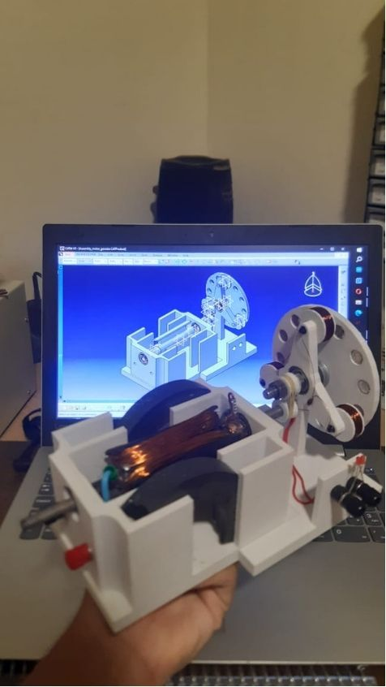
3D‑Printed Electric Motors
Fully 3D‑printed DC motor bodies designed from scratch in CAD, wound and assembled by hand to validate the mechanical design before moving to production parts.
U1
Embedded Systems & Hardware Engineer
I design the boards, firmware, and control logic that sit between sensors and decisions — from CAD to production.
// MECHANICAL CADs
U02

Fully 3D‑printed DC motor bodies designed from scratch in CAD, wound and assembled by hand to validate the mechanical design before moving to production parts.
U03
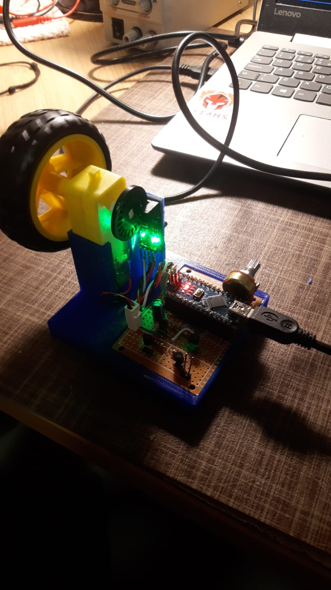
A compact 3D‑printed test bench with driver electronics and a potentiometer, built to demonstrate small DC‑motor control on breadboard prototypes.
// PCB PROJECTS
U04
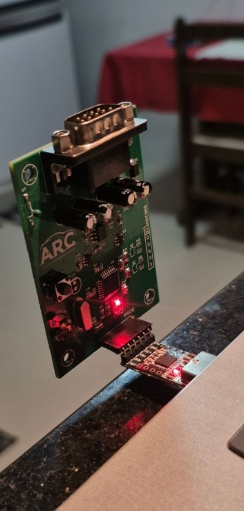
Custom weather‑station PCB for the UnB ARC team: schematic, layout and bring‑up of a board that reads environmental sensors and reports over a serial link.
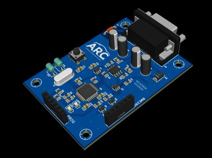
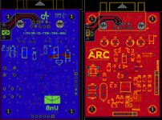
U05

A vehicle telemetry dongle that plugs into the OBD‑II port to read CAN data and stream it over BLE/Wi‑Fi/LTE. Includes schematic, multi‑board layout and panelized production files.


U06

ESP32‑based PCB that remotely powers a server on and off, paired with a small web dashboard (ServerCtrl) to trigger power, reset and read live status.
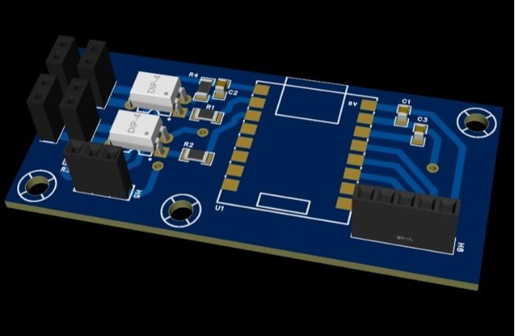
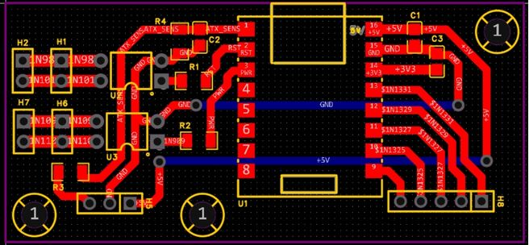
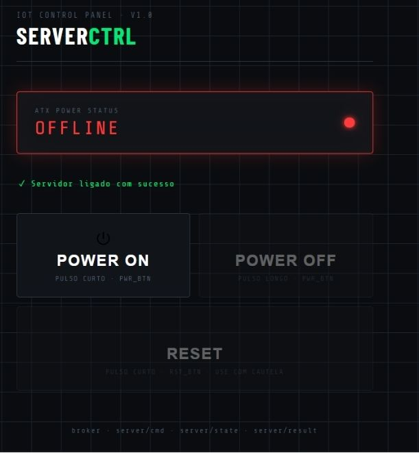
// OTHER PROJECTS
U07
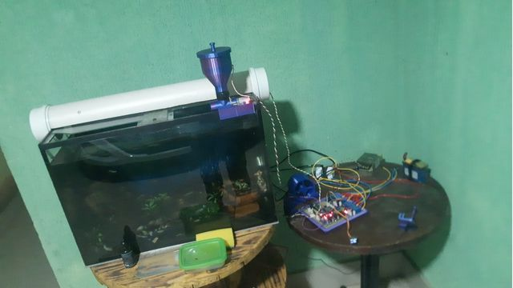
A mechanical + electronic control system for an aquarium, including a custom auger‑screw fluid mixer and driver electronics for automated dosing.
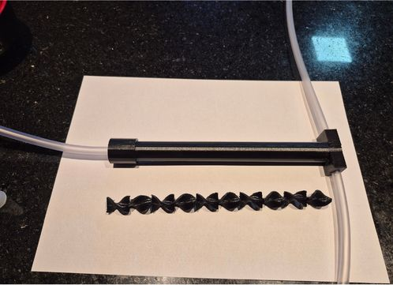
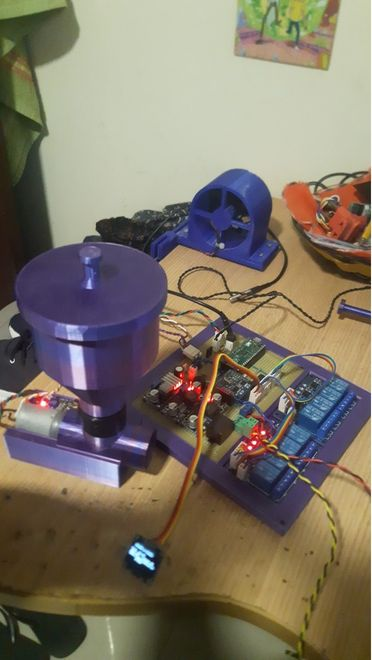
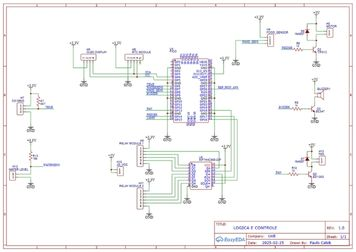
U08
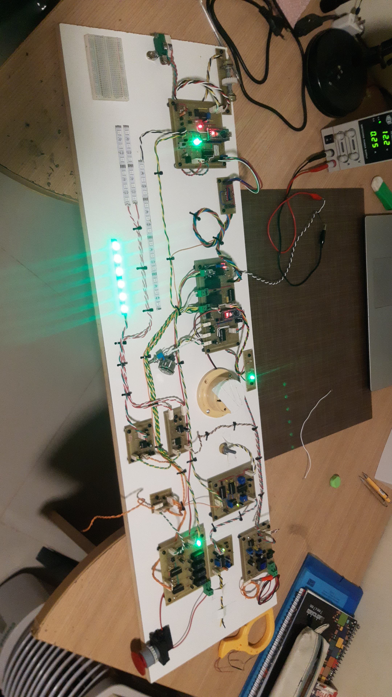
A set of ECUs enforcing all FSAE 2022 competition electrical rules, built and bench‑tested as a full board of interconnected modules.
U09
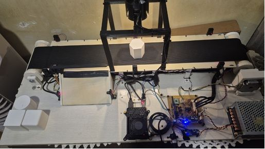
Raspberry Pi 3B + STM32G070 sorting line: mainboard schematic, finite‑state‑machine firmware and a graphical control interface (still in progress).
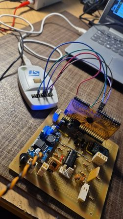
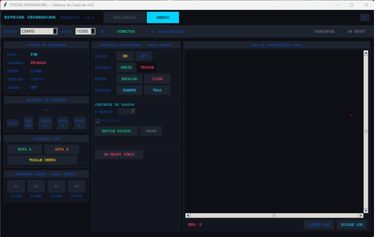